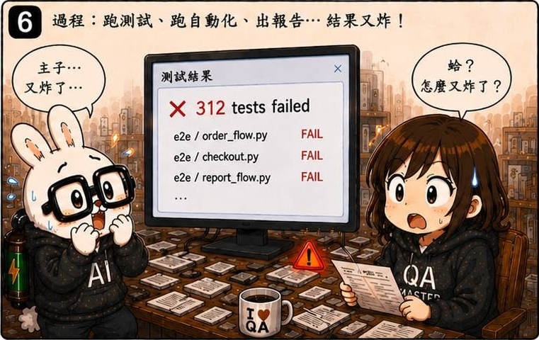
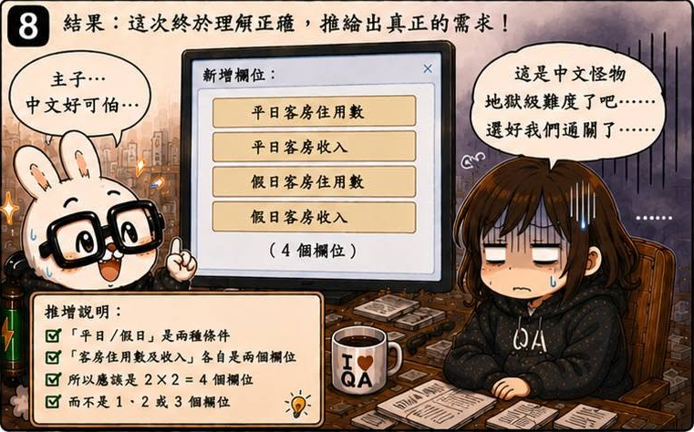

AI QA Portfolio
🐰 作者後記
用文字描述需求，其實是一件很專業的事。
因為有些句子看起來非常簡單。
簡單到你根本不會懷疑它。
甚至覺得：
這有什麼好討論的？
直到有一天，苦命兔開始認真讀需求。
🔥 真實案例
最近有一張票寫著：
新增平日／假日客房住用數及收入欄位
看到的瞬間，我心裡想：
「喔，很簡單啊。」
結果事情很快就不簡單了。
被苦命兔追問幾次之後，我才真的停下來拆這句話。
然後發現：
光是我自己，就能理解出三種意思。
解讀一
（平日／假日客房住用數）及（收入）
共 2 個欄位
解讀二
（平日客房住用數）
（假日客房住用數）
（收入）
共 3 個欄位
解讀三
（平日客房住用數）
（假日客房住用數）
（平日收入）
（假日收入）
共 4 個欄位
然後我突然發現：
靠北，我自己也看不太懂。
所以到底是要新增幾個欄位？
🛠 解決方案
更慘的是：
這個需求其實有機會更早被發現。
因為我當時已經有 Test Case Audit。
但我在 Review 的時候沒有仔細拆解需求。
直接放過去了。
於是後面開始發生：
需求理解
寫 Test Case
寫腳本
跑自動化
出報告
全部重來
問題其實從第一步就存在。
只是一路被帶到最後。
從那次之後，我開始建立 Requirements Audit。
在真正開始設計測試之前，先檢查：
- 是否存在多種解讀
- 是否缺少定義
- 是否有隱含規則
- 是否需要確認的地方
先確認理解一致，再開始工作。
💡 我學到什麼
這一話讓我第一次理解：
需求品質的重要性，遠遠超過測試品質。
以前需求模糊一點，人類通常會憑經驗補上。
甚至大家都沒發現自己在腦補。
但 AI 不一樣。
它會非常認真地執行你的需求。
而且會持續執行、反覆執行、大量執行。
如果需求本身存在歧義，AI 只會把錯誤放大。
所以後來我慢慢形成一個習慣：
不要急著寫 Test Case。
不要急著寫腳本。
甚至不要急著開始測試。
先確認大家理解的是同一件事。
因為有時候，真正昂貴的不是做錯。
而是把錯的事情做一百次。
🏷 關鍵能力
- Requirements Audit
- Test Case Review
- Requirement Analysis
- Context Validation